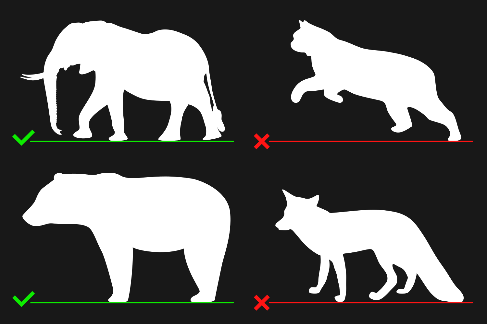

- No content of anything which is sexually explicit, obscene, immoral, or objects from movies
- Keep graphics simple but interesting
- Make it accurate but easy to understand in silhouette form
- All angles of the object must be perfectly perpendicular (and orthogonal) to the side of the object depicted
- The color of the object must be 100% white (#FFFFFF or RGB: 255, 255, 255) with an alpha of 1.0
- The object should generally only be one, solid object
- All stroked paths should be converted to filled paths
- The page size of the SVG must be the same size as the object's bounding box (no white space)
Quality Guidelines - Compare (Size and Shape)
Make sure your images comply with these guidelines or they may be rejected!
Read time:
3-5 minutes
Last changed:
August 31, 2024
Guidelines Summary
Depicted Content
Almost anything which is an object can be submitted
EXCEPTanything which is sexually explicit, obscene, immoral, or objects from movies.
Graphics of random, obscure objects or anything which is very similar to already existing objects may be rejected.
Simplicity
To keep the tool fast and responsive as well as making the visualizations easy to understand, object images should be simple. When designing an object, make it simple but not too simple. Objects with too much or too little detail may be rejected. Detail makes the tool more interesting but it also makes the tool slower, so a pleasing middle ground is required.

Accuracy
Make sure your object silhouette is as accurate as possible in most areas! Generally speaking, the more accurate, the better. It is recommended that you trace the silhouette based on a reference image. There are some cases where accuracy should be lessened though.
For example, if you're making a graphic of an animal, the legs must be fairly straight and perpendicular to the ground and the feet should sit mostly flat on the ground. This is usually not according to the reference image but it makes it easier to understand and more accurate in a comparison.
Angles
must be a view of the left side of the object with the object facing left. The width of the image must be the length of the object. The height of the image must be the height of the object.
Front images
must be a view of the front of the object. The width of the image must be the width of the object. The height of the image must be the height of the object.
Top images
must be a view of the top of the object with the object facing left. The width of the image must be the length of the object. The height of the image must be the width of the object.
 Note: All angles must be perfectly perpendicular to the side, front, or top of the object (i.e. no 45° front and side angles, etc.) and must be nearly orthographic (don't trace objects from images with a wide field of view).
Note: All angles must be perfectly perpendicular to the side, front, or top of the object (i.e. no 45° front and side angles, etc.) and must be nearly orthographic (don't trace objects from images with a wide field of view).
Additional Guidelines
The color of the object must be 100% white (#FFFFFF or RGB: 255, 255, 255) with an alpha of 1.0 (#FF). The object must also be on a fully transparent background (alpha of 0.0).

The final image should be only one, solid object (in most cases). Objects with strokes are not allowed. If you have stroked paths, such as ropes or cables, make sure to convert them to a filled path.
Make sure the page size of the SVG is
EXACTLYthe same as the size of the object (no white space). This does NOT mean that the image must be a certain meters/pixel etc. This is simply for eliminating white space to avoid errors when the tool sizes the image. Removing white space can be achieved in Inkscape using
File > Document Properties > Resize to content.